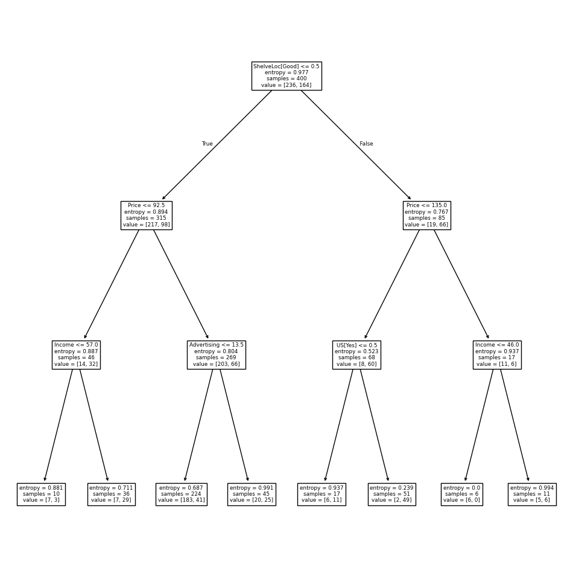
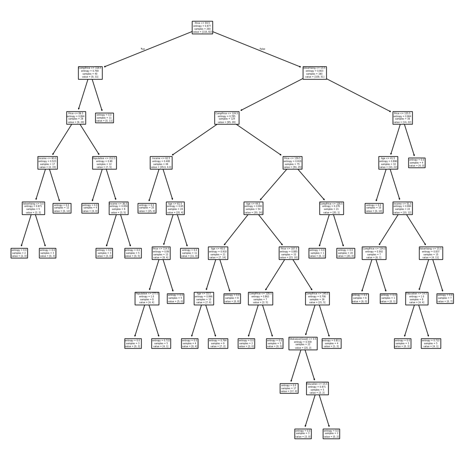
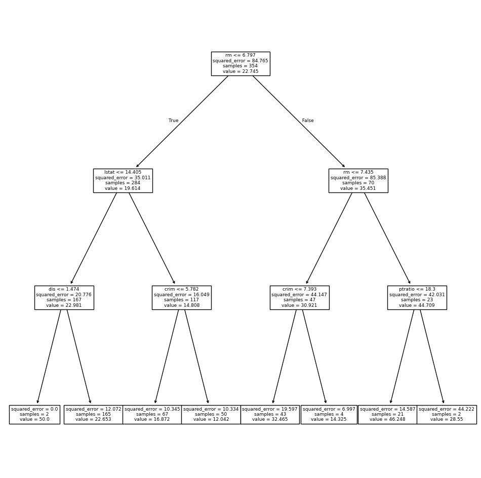
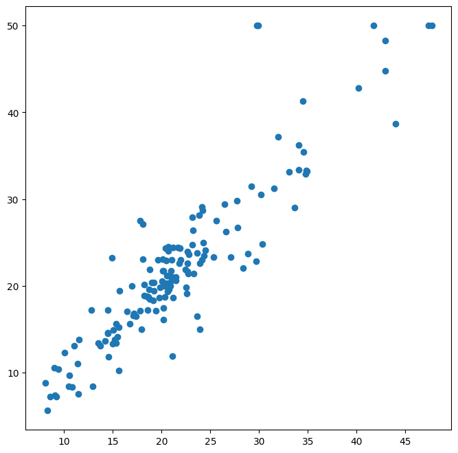
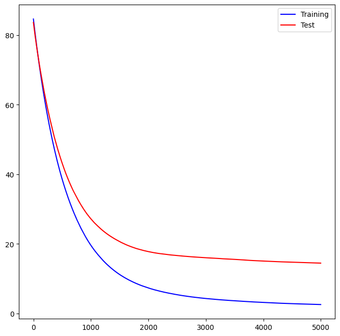

import numpy as np
import pandas as pd
from matplotlib.pyplot import subplots
import sklearn.model_selection as skm
from ISLP import load_data, confusion_table
from ISLP.models import ModelSpec as MS42 Tree-Based Methods


Note
We import some of our usual libraries at this top level.
We also collect the new imports needed for this lab.
from sklearn.tree import (DecisionTreeClassifier as DTC,
DecisionTreeRegressor as DTR,
plot_tree,
export_text)
from sklearn.metrics import (accuracy_score,
log_loss)
from sklearn.ensemble import \
(RandomForestRegressor as RF,
GradientBoostingRegressor as GBR)
from ISLP.bart import BART42.1 Fitting Classification Trees
We first use classification trees to analyze the Carseats data set. In these data, Sales is a continuous variable, and so we begin by recoding it as a binary variable. We use the where() function to create a variable, called High, which takes on a value of Yes if the Sales variable exceeds 8, and takes on a value of No otherwise.
Carseats = load_data('Carseats')
# data information
print(Carseats.info())
print('='*40)
print(Carseats.describe())
print('='*40)
print(Carseats.head())
<class 'pandas.core.frame.DataFrame'>
RangeIndex: 400 entries, 0 to 399
Data columns (total 11 columns):
# Column Non-Null Count Dtype
--- ------ -------------- -----
0 Sales 400 non-null float64
1 CompPrice 400 non-null int64
2 Income 400 non-null int64
3 Advertising 400 non-null int64
4 Population 400 non-null int64
5 Price 400 non-null int64
6 ShelveLoc 400 non-null category
7 Age 400 non-null int64
8 Education 400 non-null int64
9 Urban 400 non-null category
10 US 400 non-null category
dtypes: category(3), float64(1), int64(7)
memory usage: 26.7 KB
None
========================================
Sales CompPrice Income Advertising Population \
count 400.000000 400.000000 400.000000 400.000000 400.000000
mean 7.496325 124.975000 68.657500 6.635000 264.840000
std 2.824115 15.334512 27.986037 6.650364 147.376436
min 0.000000 77.000000 21.000000 0.000000 10.000000
25% 5.390000 115.000000 42.750000 0.000000 139.000000
50% 7.490000 125.000000 69.000000 5.000000 272.000000
75% 9.320000 135.000000 91.000000 12.000000 398.500000
max 16.270000 175.000000 120.000000 29.000000 509.000000
Price Age Education
count 400.000000 400.000000 400.000000
mean 115.795000 53.322500 13.900000
std 23.676664 16.200297 2.620528
min 24.000000 25.000000 10.000000
25% 100.000000 39.750000 12.000000
50% 117.000000 54.500000 14.000000
75% 131.000000 66.000000 16.000000
max 191.000000 80.000000 18.000000
========================================
Sales CompPrice Income Advertising Population Price ShelveLoc Age \
0 9.50 138 73 11 276 120 Bad 42
1 11.22 111 48 16 260 83 Good 65
2 10.06 113 35 10 269 80 Medium 59
3 7.40 117 100 4 466 97 Medium 55
4 4.15 141 64 3 340 128 Bad 38
Education Urban US
0 17 Yes Yes
1 10 Yes Yes
2 12 Yes Yes
3 14 Yes Yes
4 13 Yes No High = np.where(Carseats.Sales > 8,
"Yes",
"No")We now use DecisionTreeClassifier() to fit a classification tree in order to predict High using all variables but Sales. To do so, we must form a model matrix as we did when fitting regression models.
model = MS(Carseats.columns.drop('Sales'), intercept=False)
D = model.fit_transform(Carseats)
feature_names = list(D.columns)
X = np.asarray(D)We have converted D from a data frame to an array X, which is needed in some of the analysis below. We also need the feature_names for annotating our plots later.
There are several options needed to specify the classifier, such as max_depth (how deep to grow the tree), min_samples_split (minimum number of observations in a node to be eligible for splitting) and criterion (whether to use Gini or cross-entropy as the split criterion). We also set random_state for reproducibility; ties in the split criterion are broken at random.
clf = DTC(criterion='entropy',
max_depth=3,
random_state=0)
clf.fit(X, High)DecisionTreeClassifier(criterion='entropy', max_depth=3, random_state=0)In a Jupyter environment, please rerun this cell to show the HTML representation or trust the notebook.
On GitHub, the HTML representation is unable to render, please try loading this page with nbviewer.org.
DecisionTreeClassifier(criterion='entropy', max_depth=3, random_state=0)
In our discussion of qualitative features in Section 3.3, we noted that for a linear regression model such a feature could be represented by including a matrix of dummy variables (one-hot-encoding) in the model matrix, using the formula notation of statsmodels. As mentioned in Section 8.1, there is a more natural way to handle qualitative features when building a decision tree, that does not require such dummy variables; each split amounts to partitioning the levels into two groups. However, the sklearn implementation of decision trees does not take advantage of this approach; instead it simply treats the one-hot-encoded levels as separate variables.
accuracy_score(High, clf.predict(X))0.79With only the default arguments, the training error rate is 21%. For classification trees, we can access the value of the deviance using log_loss(), \[\begin{equation*}
\begin{split}
-2 \sum_m \sum_k n_{mk} \log \hat{p}_{mk},
\end{split}
\end{equation*}\] where \(n_{mk}\) is the number of observations in the \(m\)th terminal node that belong to the \(k\)th class.
resid_dev = np.sum(log_loss(High, clf.predict_proba(X)))
resid_dev0.47106470626493574This is closely related to the entropy, defined in (8.7). A small deviance indicates a tree that provides a good fit to the (training) data.
One of the most attractive properties of trees is that they can be graphically displayed. Here we use the plot() function to display the tree structure.
ax = subplots(figsize=(12,12))[1]
plot_tree(clf,
feature_names=feature_names,
ax=ax);
The most important indicator of Sales appears to be ShelveLoc.
We can see a text representation of the tree using export_text(), which displays the split criterion (e.g. Price <= 92.5) for each branch. For leaf nodes it shows the overall prediction
(Yes or No). We can also see the number of observations in that leaf that take on values of Yes and No by specifying show_weights=True.
print(export_text(clf,
feature_names=feature_names,
show_weights=True))|--- ShelveLoc[Good] <= 0.50
| |--- Price <= 92.50
| | |--- Income <= 57.00
| | | |--- weights: [7.00, 3.00] class: No
| | |--- Income > 57.00
| | | |--- weights: [7.00, 29.00] class: Yes
| |--- Price > 92.50
| | |--- Advertising <= 13.50
| | | |--- weights: [183.00, 41.00] class: No
| | |--- Advertising > 13.50
| | | |--- weights: [20.00, 25.00] class: Yes
|--- ShelveLoc[Good] > 0.50
| |--- Price <= 135.00
| | |--- US[Yes] <= 0.50
| | | |--- weights: [6.00, 11.00] class: Yes
| | |--- US[Yes] > 0.50
| | | |--- weights: [2.00, 49.00] class: Yes
| |--- Price > 135.00
| | |--- Income <= 46.00
| | | |--- weights: [6.00, 0.00] class: No
| | |--- Income > 46.00
| | | |--- weights: [5.00, 6.00] class: Yes
In order to properly evaluate the performance of a classification tree on these data, we must estimate the test error rather than simply computing the training error. We split the observations into a training set and a test set, build the tree using the training set, and evaluate its performance on the test data. This pattern is similar to that in Chapter 6, with the linear models replaced here by decision trees — the code for validation is almost identical. This approach leads to correct predictions for 68.5% of the locations in the test data set.
validation = skm.ShuffleSplit(n_splits=1,
test_size=200,
random_state=0)
results = skm.cross_validate(clf,
D,
High,
cv=validation)
results['test_score']array([0.685])Next, we consider whether pruning the tree might lead to improved classification performance. We first split the data into a training and test set. We will use cross-validation to prune the tree on the training set, and then evaluate the performance of the pruned tree on the test set.
(X_train,
X_test,
High_train,
High_test) = skm.train_test_split(X,
High,
test_size=0.5,
random_state=0)
We first refit the full tree on the training set; here we do not set a max_depth parameter, since we will learn that through cross-validation.
clf = DTC(criterion='entropy', random_state=0)
clf.fit(X_train, High_train)
accuracy_score(High_test, clf.predict(X_test))0.735Next we use the cost_complexity_pruning_path() method of clf to extract cost-complexity values.
ccp_path = clf.cost_complexity_pruning_path(X_train, High_train)
kfold = skm.KFold(10,
random_state=1,
shuffle=True)This yields a set of impurities and \(\alpha\) values from which we can extract an optimal one by cross-validation.
grid = skm.GridSearchCV(clf,
{'ccp_alpha': ccp_path.ccp_alphas},
refit=True,
cv=kfold,
scoring='accuracy')
grid.fit(X_train, High_train)
grid.best_score_0.685Let’s take a look at the pruned tree.
ax = subplots(figsize=(12, 12))[1]
best_ = grid.best_estimator_
plot_tree(best_,
feature_names=feature_names,
ax=ax);
This is quite a bushy tree. We could count the leaves, or query best_ instead.
best_.tree_.n_leaves30The tree with 30 terminal nodes results in the lowest cross-validation error rate, with an accuracy of 68.5%. How well does this pruned tree perform on the test data set? Once again, we apply the predict() function.
print(accuracy_score(High_test,
best_.predict(X_test)))
confusion = confusion_table(best_.predict(X_test),
High_test)
confusion0.72| Truth | No | Yes |
|---|---|---|
| Predicted | ||
| No | 94 | 32 |
| Yes | 24 | 50 |
Now 72.0% of the test observations are correctly classified, which is slightly worse than the error for the full tree (with 35 leaves). So cross-validation has not helped us much here; it only pruned off 5 leaves, at a cost of a slightly worse error. These results would change if we were to change the random number seeds above; even though cross-validation gives an unbiased approach to model selection, it does have variance.
42.2 Fitting Regression Trees
Here we fit a regression tree to the Boston data set. The steps are similar to those for classification trees.
Boston = load_data("Boston")
model = MS(Boston.columns.drop('medv'), intercept=False)
D = model.fit_transform(Boston)
feature_names = list(D.columns)
X = np.asarray(D)First, we split the data into training and test sets, and fit the tree to the training data. Here we use 30% of the data for the test set.
(X_train,
X_test,
y_train,
y_test) = skm.train_test_split(X,
Boston['medv'],
test_size=0.3,
random_state=0)Having formed our training and test data sets, we fit the regression tree.
reg = DTR(max_depth=3)
reg.fit(X_train, y_train)
ax = subplots(figsize=(12,12))[1]
plot_tree(reg,
feature_names=feature_names,
ax=ax);
The variable lstat measures the percentage of individuals with lower socioeconomic status. The tree indicates that lower values of lstat correspond to more expensive houses. The tree predicts a median house price of $12,042 for small-sized homes (rm < 6.8), in suburbs in which residents have low socioeconomic status (lstat > 14.4) and the crime-rate is moderate (crim > 5.8).
Now we use the cross-validation function to see whether pruning the tree will improve performance.
ccp_path = reg.cost_complexity_pruning_path(X_train, y_train)
kfold = skm.KFold(5,
shuffle=True,
random_state=10)
grid = skm.GridSearchCV(reg,
{'ccp_alpha': ccp_path.ccp_alphas},
refit=True,
cv=kfold,
scoring='neg_mean_squared_error')
G = grid.fit(X_train, y_train)In keeping with the cross-validation results, we use the pruned tree to make predictions on the test set.
best_ = grid.best_estimator_
np.mean((y_test - best_.predict(X_test))**2)28.069857549754044In other words, the test set MSE associated with the regression tree is 28.07. The square root of the MSE is therefore around 5.30, indicating that this model leads to test predictions that are within around $5300 of the true median home value for the suburb.
Let’s plot the best tree to see how interpretable it is.
ax = subplots(figsize=(12,12))[1]
plot_tree(G.best_estimator_,
feature_names=feature_names,
ax=ax);42.3 Bagging and Random Forests
Here we apply bagging and random forests to the Boston data, using the RandomForestRegressor() from the sklearn.ensemble package. Recall that bagging is simply a special case of a random forest with \(m=p\). Therefore, the RandomForestRegressor() function can be used to perform both bagging and random forests. We start with bagging.
bag_boston = RF(max_features=X_train.shape[1], random_state=0)
bag_boston.fit(X_train, y_train)RandomForestRegressor(max_features=12, random_state=0)In a Jupyter environment, please rerun this cell to show the HTML representation or trust the notebook.
On GitHub, the HTML representation is unable to render, please try loading this page with nbviewer.org.
RandomForestRegressor(max_features=12, random_state=0)
The argument max_features indicates that all 12 predictors should be considered for each split of the tree — in other words, that bagging should be done. How well does this bagged model perform on the test set?
ax = subplots(figsize=(8,8))[1]
y_hat_bag = bag_boston.predict(X_test)
ax.scatter(y_hat_bag, y_test)
np.mean((y_test - y_hat_bag)**2)14.684333796052627
The test set MSE associated with the bagged regression tree is 14.63, about half that obtained using an optimally-pruned single tree. We could change the number of trees grown from the default of 100 by using the n_estimators argument:
bag_boston = RF(max_features=X_train.shape[1],
n_estimators=500,
random_state=0).fit(X_train, y_train)
y_hat_bag = bag_boston.predict(X_test)
np.mean((y_test - y_hat_bag)**2)14.565312103157904There is not much change. Bagging and random forests cannot overfit by increasing the number of trees, but can underfit if the number is too small.
Growing a random forest proceeds in exactly the same way, except that we use a smaller value of the max_features argument. By default, RandomForestRegressor() uses \(p\) variables when building a random forest of regression trees (i.e. it defaults to bagging), and RandomForestClassifier() uses \(\sqrt{p}\) variables when building a random forest of classification trees. Here we use max_features=6.
RF_boston = RF(max_features=6,
random_state=0).fit(X_train, y_train)
y_hat_RF = RF_boston.predict(X_test)
np.mean((y_test - y_hat_RF)**2)19.998839111842113The test set MSE is 20.04; this indicates that random forests did somewhat worse than bagging in this case. Extracting the feature_importances_ values from the fitted model, we can view the importance of each variable.
feature_imp = pd.DataFrame(
{'importance':RF_boston.feature_importances_},
index=feature_names)
feature_imp.sort_values(by='importance', ascending=False)| importance | |
|---|---|
| lstat | 0.353808 |
| rm | 0.334349 |
| ptratio | 0.069519 |
| crim | 0.056386 |
| indus | 0.053183 |
| dis | 0.043762 |
| nox | 0.033085 |
| tax | 0.025047 |
| age | 0.019238 |
| rad | 0.005169 |
| chas | 0.004331 |
| zn | 0.002123 |
This is a relative measure of the total decrease in node impurity that results from splits over that variable, averaged over all trees (this was plotted in Figure 8.9 for a model fit to the Heart data).
The results indicate that across all of the trees considered in the random forest, the wealth level of the community (lstat) and the house size (rm) are by far the two most important variables.
42.4 Boosting
Here we use GradientBoostingRegressor() from sklearn.ensemble to fit boosted regression trees to the Boston data set. For classification we would use GradientBoostingClassifier(). The argument n_estimators=5000 indicates that we want 5000 trees, and the option max_depth=3 limits the depth of each tree. The argument learning_rate is the \(\lambda\) mentioned earlier in the description of boosting.
boost_boston = GBR(n_estimators=5000,
learning_rate=0.001,
max_depth=3,
random_state=0)
boost_boston.fit(X_train, y_train)GradientBoostingRegressor(learning_rate=0.001, n_estimators=5000,
random_state=0)In a Jupyter environment, please rerun this cell to show the HTML representation or trust the notebook. On GitHub, the HTML representation is unable to render, please try loading this page with nbviewer.org.
GradientBoostingRegressor(learning_rate=0.001, n_estimators=5000,
random_state=0)We can see how the training error decreases with the train_score_ attribute. To get an idea of how the test error decreases we can use the staged_predict() method to get the predicted values along the path.
test_error = np.zeros_like(boost_boston.train_score_)
for idx, y_ in enumerate(boost_boston.staged_predict(X_test)):
test_error[idx] = np.mean((y_test - y_)**2)
plot_idx = np.arange(boost_boston.train_score_.shape[0])
ax = subplots(figsize=(8,8))[1]
ax.plot(plot_idx,
boost_boston.train_score_,
'b',
label='Training')
ax.plot(plot_idx,
test_error,
'r',
label='Test')
ax.legend();
We now use the boosted model to predict medv on the test set:
y_hat_boost = boost_boston.predict(X_test);
np.mean((y_test - y_hat_boost)**2)14.478980532887332The test MSE obtained is 14.48, similar to the test MSE for bagging. If we want to, we can perform boosting with a different value of the shrinkage parameter \(\lambda\) in (8.10). The default value is 0.001, but this is easily modified. Here we take \(\lambda=0.2\).
boost_boston = GBR(n_estimators=5000,
learning_rate=0.2,
max_depth=3,
random_state=0)
boost_boston.fit(X_train,
y_train)
y_hat_boost = boost_boston.predict(X_test);
np.mean((y_test - y_hat_boost)**2)14.501514553719568In this case, using \(\lambda=0.2\) leads to almost the same test MSE as when using \(\lambda=0.001\).
42.5 Bayesian Additive Regression Trees
In this section we demonstrate a Python implementation of BART found in the ISLP.bart package. We fit a model to the Boston housing data set. This BART() estimator is designed for quantitative outcome variables, though other implementations are available for fitting logistic and probit models to categorical outcomes.
bart_boston = BART(random_state=0, burnin=5, ndraw=15)
bart_boston.fit(X_train, y_train)BART(burnin=5, ndraw=15, random_state=0)In a Jupyter environment, please rerun this cell to show the HTML representation or trust the notebook.
On GitHub, the HTML representation is unable to render, please try loading this page with nbviewer.org.
BART(burnin=5, ndraw=15, random_state=0)
On this data set, with this split into test and training, we see that the test error of BART is similar to that of random forest.
yhat_test = bart_boston.predict(X_test.astype(np.float32))
np.mean((y_test - yhat_test)**2)22.145009458109225We can check how many times each variable appeared in the collection of trees. This gives a summary similar to the variable importance plot for boosting and random forests.
var_inclusion = pd.Series(bart_boston.variable_inclusion_.mean(0),
index=D.columns)
var_inclusioncrim 26.933333
zn 27.866667
indus 26.466667
chas 22.466667
nox 26.600000
rm 29.800000
age 22.733333
dis 26.466667
rad 23.666667
tax 24.133333
ptratio 24.266667
lstat 31.000000
dtype: float64